Briefing Discover
Conversation gets you understanding. A workflow gets you action. This is the mission where Mission Control stops saying “please open a ticket” and starts opening the ticket itself.
The agent is the flight crew: it talks, reasons, and decides. The workflow is the launch sequence: a fixed, checkable series of steps that runs the same way every time. Crews improvise. Launch sequences don't.
Anatomy of a workflow
What starts it
The agent calls it, a schedule fires, or a record changes
What it receives
Typed values: service, symptom, error code…
What it does
Connector steps, AI steps, data operations
How it decides
Conditions, switches, loops, expressions
What it returns
Issue ID, severity, next step
In Copilot Studio, workflows live under Workflows in the left rail. These agent flows are built on the same engine as Power Automate. An agent can call a flow as a tool: it fills in the flow's inputs from the conversation, waits for the flow to respond, and then uses the outputs in its reply.
The contract: inputs and outputs
Think of the inputs and outputs as a contract between the agent and the workflow. If the contract is clear, the agent can call the workflow reliably. If it's vague, the agent will guess. Here is the contract for our triage workflow:
| Direction | Name | Type | Description (the orchestrator reads this!) |
|---|---|---|---|
| Input | Service | Text | Service code: MOB, OLB, P2P, RDC, BIL, MFA or NTF |
| Input | Symptom | Text | What the member sees, including any error code |
| Input | MembersAffected | Text | How many members are affected: One, Some, or Many |
| Input | FundsOrDataRisk | Yes/No | Is there any risk to member funds or data? |
| Output | Severity | Text | Sev 1–4, from the Contoso severity matrix |
| Output | Route | Text | What the agent must do next, e.g. “STOP — escalate to on-call” |
| Output Day 2 | IssueId | Text | Added in Mission 06 when the workflow writes to the SharePoint register |
Where should the logic live?
| Put it in… | When… | Example |
|---|---|---|
| Instructions | It's judgment, tone, or a soft rule | “Be concise. Use the member's language.” |
| A topic | The conversation itself must follow a path | Ask for the error code before continuing |
| A workflow | It must happen the same way every time, and be auditable | Calculate severity, create the record, notify on-call |
Build the issue triage workflow
What you'll build
- An agent flow, Triage Digital Issue, that the agent calls as a tool
- Typed inputs that match the contract above
- A risk Condition with two branches and a severity expression
- Outputs returned to the agent, and a first end-to-end test
Pre-flight
- Mission 02 complete: Mission Control has instructions and knowledge
- Keep the input/output contract table open
- Team mode: the Designer reads the contract aloud while the Builder configures it
-
Start a new workflow from the agent
In Mission Control, open Tools → Add a tool → Add new · Workflows. The agent-flow designer opens with the two blocks every agent flow needs: When an agent calls the flow (the trigger) and Respond to the agent (the return).
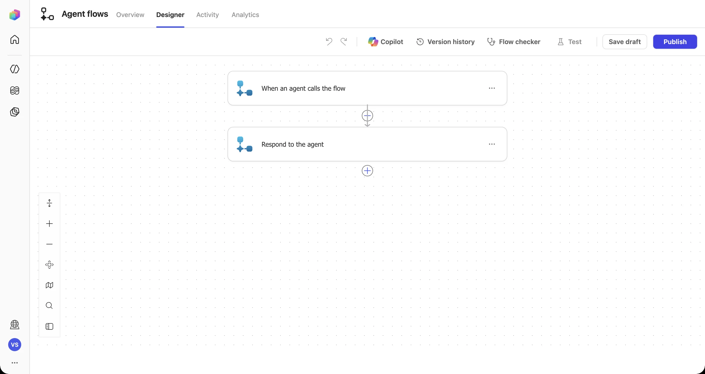
-
Define the input contract
Select the trigger card, then Add an input. You can choose from six input types: Text, Yes/No, File, Email, Number, and Date.
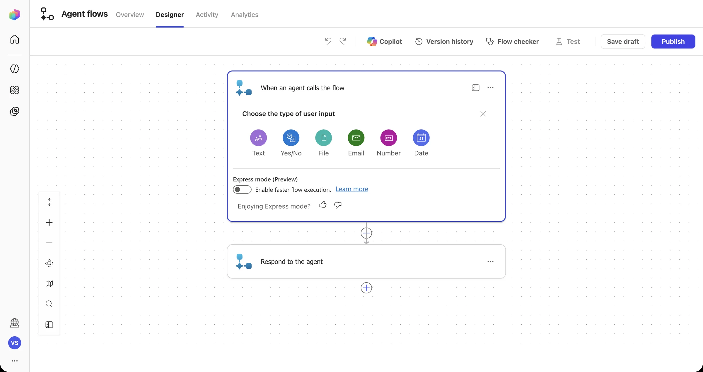
Create the four inputs from the contract. The descriptions matter: the orchestrator reads them to decide what to pass in.
Type Name Description Text ServiceService code: MOB, OLB, P2P, RDC, BIL, MFA or NTF Text SymptomWhat the member sees, including any error code Text MembersAffectedHow many members are affected: One, Some, or Many Yes/No FundsOrDataRiskIs there any risk to member funds or data? 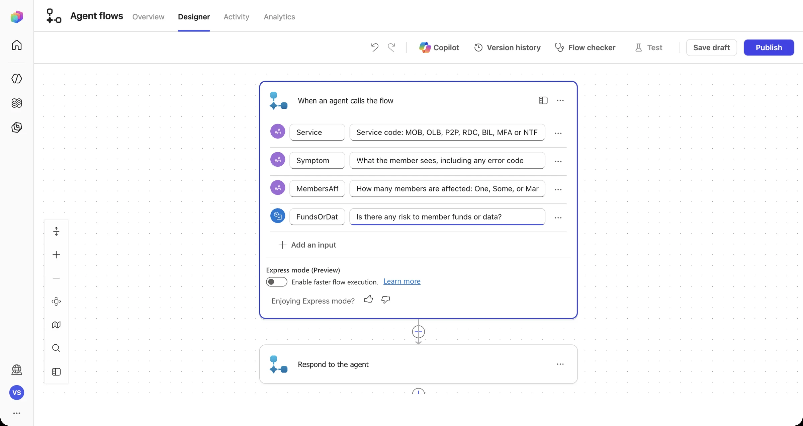
-
Add the decision point: a Condition
Select the + between the trigger and the response, search for
Condition, and pick Control · Condition.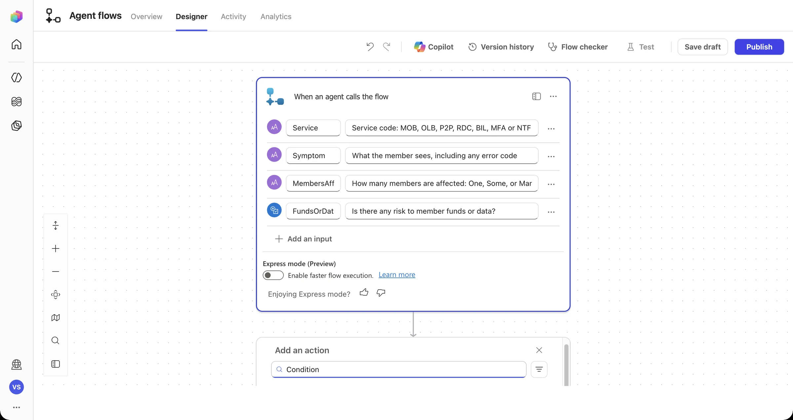
Click into the left Choose a value box and type /, then choose Insert dynamic content and pick FundsOrDataRisk under When an agent calls the flow.
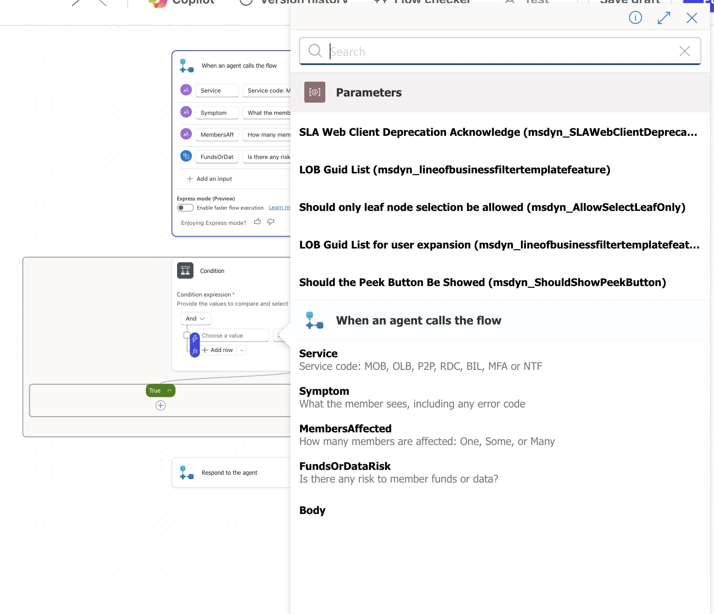
Press / in any field to insert a dynamic value or an expression. Leave the operator as is equal to. On the right side, type / → Insert expression, enter
true, and select Add.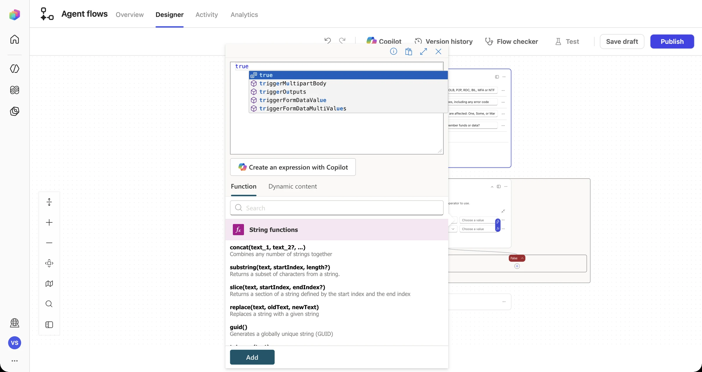
Classic trap If you type the wordtruestraight into the field, it's stored as the text “true”, so the condition compares a Yes/No with a string and never matches. Use an expression to get a real Boolean.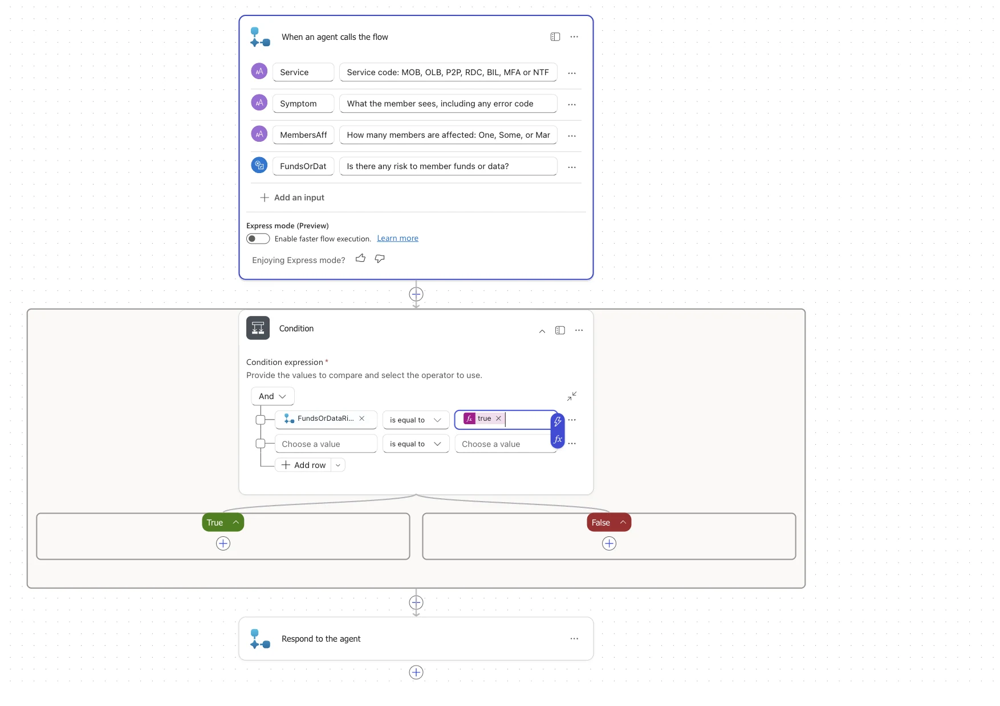
-
True branch: STOP and route to a human
Select the + inside True, add Respond to the agent, and add two Text outputs:
Severity = Sev 1 - Critical Route = STOP - escalate to Digital Operations on-call for human approval -
False branch: calculate severity with an expression
In False, add another Respond to the agent. For
Severity, type / → Insert expression and paste:if(equals(triggerBody()?['text_2'],'Many'),'Sev 2 - High',if(equals(triggerBody()?['text_2'],'Some'),'Sev 3 - Medium','Sev 4 - Low'))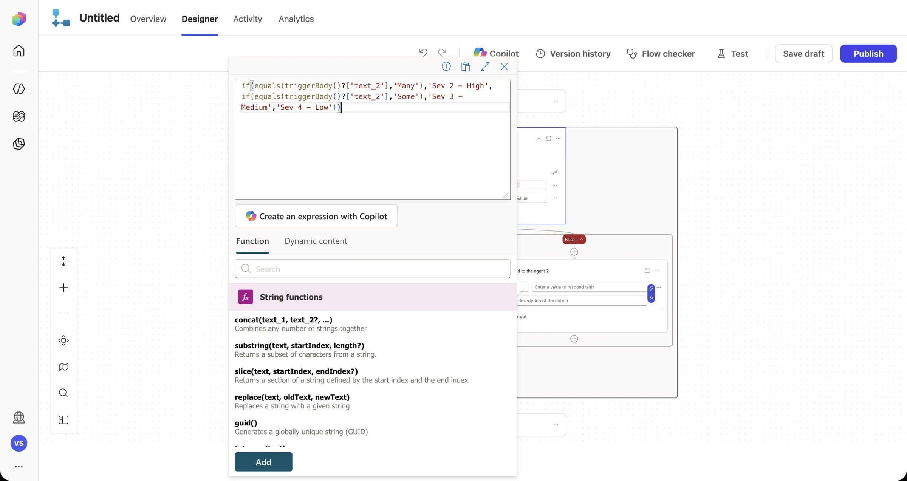
What's text_2? Agent-flow inputs get internal names by type and order:text,text_1,text_2,boolean.MembersAffectedis the third Text input, so it'stext_2. You can check this in the trigger's Code view.Add
Route=Check the Digital Issue Register, then share approved guidance or log a new issue. Finally, delete the original Respond to the agent that sits after the Condition. Each branch now returns its own answer.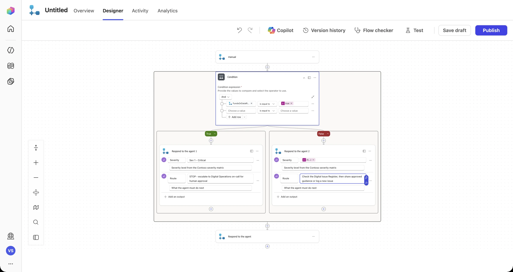
The whole workflow: one trigger, one decision, two truthful responses. -
Peek under the hood
Open the Condition's side panel (Open panel) → Code view. Every visual block is JSON underneath. Being able to read it is a real troubleshooting skill.
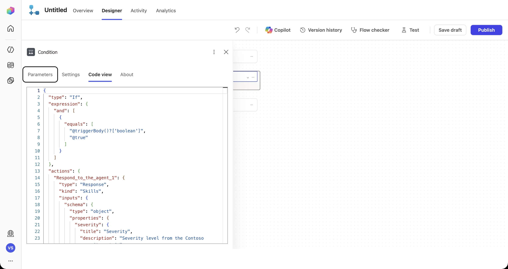
-
Save, name, and publish
Select Save draft. Then open the flow's Overview → Edit. Name it
Triage Digital Issueand give it a description.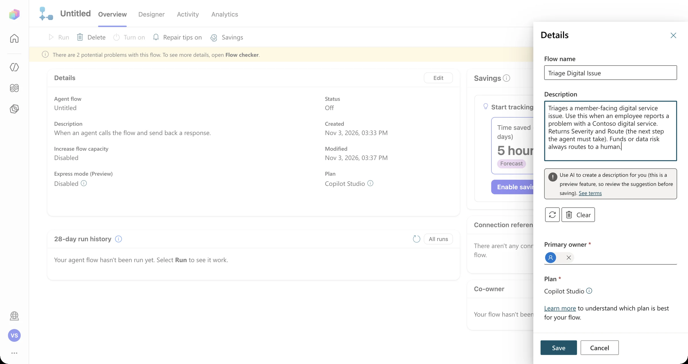
Run Flow checker. It's common to see warnings such as “never been published” or “insufficient Copilot Credits”. Warnings don't block you; errors do. Then select Publish.
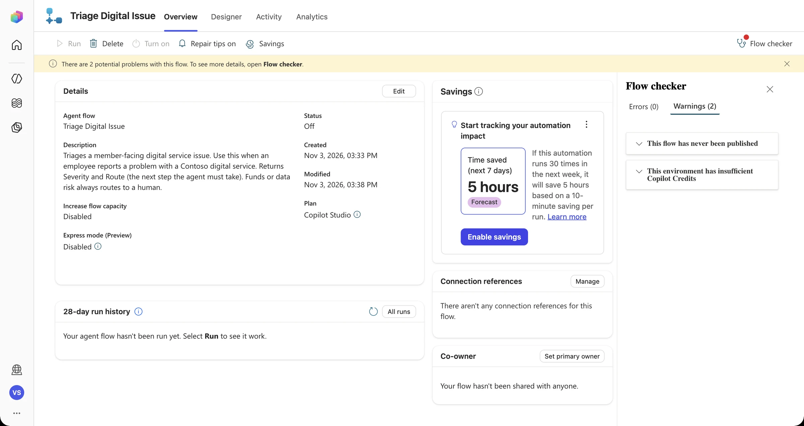
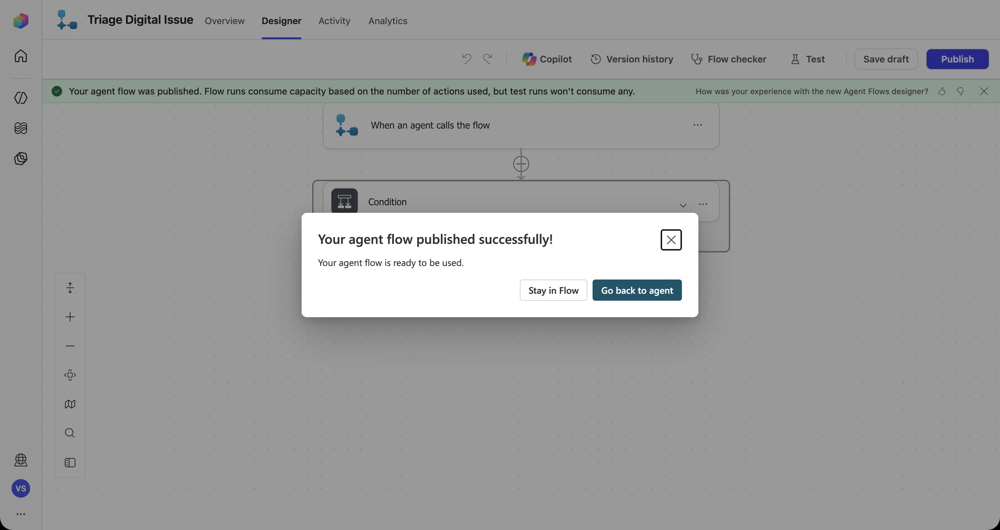
Choose Stay in Flow so you can test it first. -
Test the workflow on its own
Select Test → Manually → Test, fill in the inputs, and select Run flow. Test runs don't consume capacity.
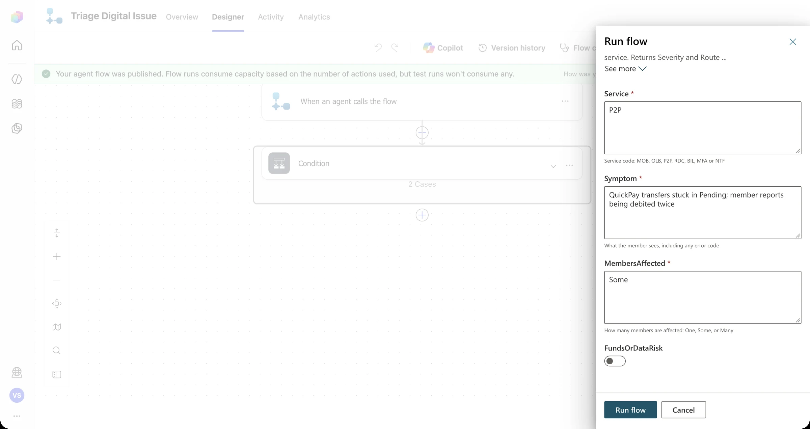
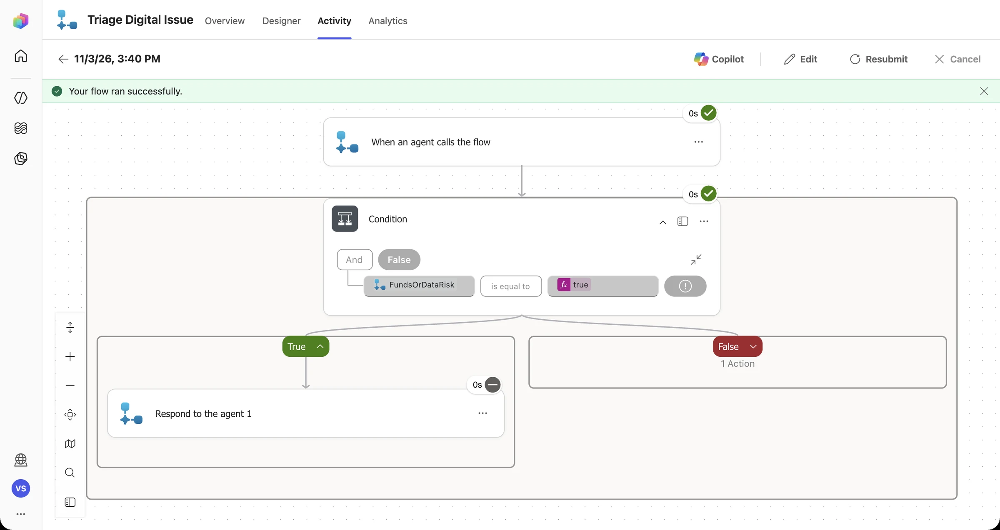
Observable proof: the condition evaluated False, so the True branch was skipped. Every run is recorded under Activity. -
Give the workflow to the agent
Go back to Mission Control → Tools → Add a tool → filter Workflows, pick Triage Digital Issue, then select Add and configure.
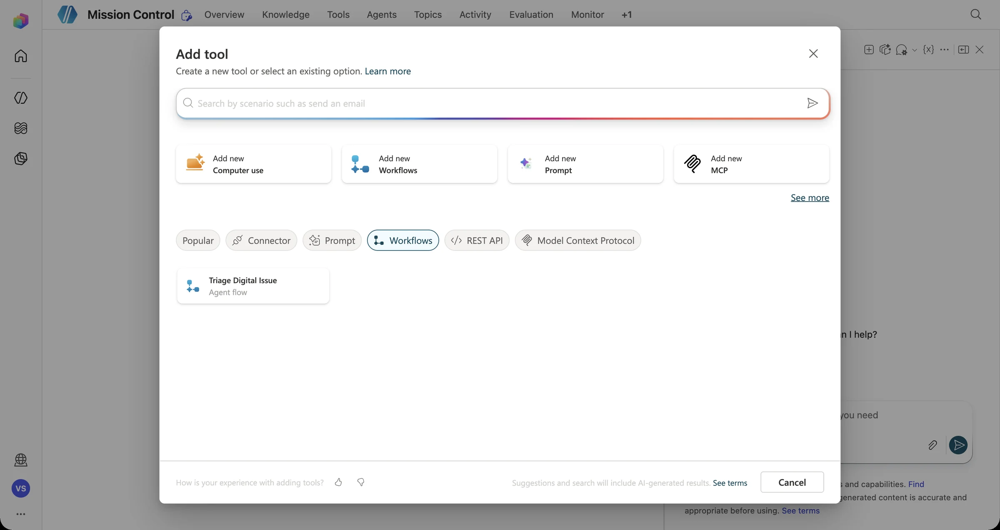
In the tool's Details, rewrite the Description. This is what the orchestrator reads when it decides whether to call the tool. Leave every input as Dynamically fill with AI and select Save.
Use this tool to triage a problem that a member reported with a Contoso digital service once you know the service, the symptom, and how many members are affected. Set FundsOrDataRisk to true if there is any chance of duplicate debits, missing money, or exposed member data. Returns Severity and Route. Always follow the Route exactly.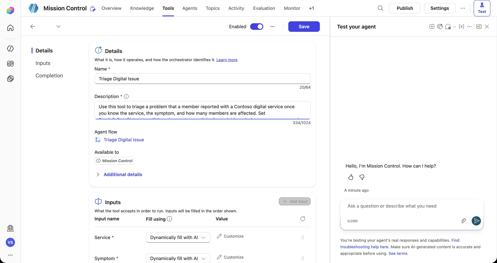
-
The wow moment: talk becomes action
Start a New test session and send:
Some Android members report Bill Pay payee search spins and then times out with error BIL-408. No money has moved. Please triage this issue.Open the activity map. The agent decided on its own to call Triage Digital Issue, extracted every input from your sentence (
Service = BIL,MembersAffected = Some,FundsOrDataRisk = false), ran the workflow, and used the returnedSeverityin its answer.
From a single sentence to a structured workflow call to a verifiable result, Sev 3 – Medium.
Stuck? Let the designer's Copilot help (and why to double-check it)
The agent-flow designer has a Copilot pane where you can describe a change in plain language. It's great for explaining actions and getting unstuck. In our dry run, though, it failed to add variable actions and deleted a step we didn't ask it to delete. Treat its output like a junior colleague's pull request: review every change, and use Version history if you need to roll back.
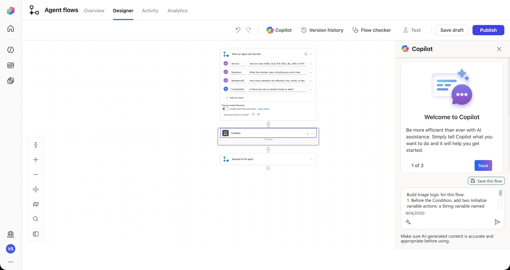
Telemetry check · Mission 03
Paper launch sequence
- On paper or a whiteboard, draw the five boxes: Trigger → Inputs → Actions → Logic → Outputs.
- Fill in the severity logic using the playbook's severity matrix. What makes an issue Sev 1? What does an “Unknown” count of affected members do?
- Write the exact sentence the agent should say after the workflow returns. It must include the Issue ID, and must never say “resolved.”
Debrief Mission 03
A workflow gives the agent a deterministic, auditable way to act.
Clear input and output names and descriptions are how the agent knows what to send and what it gets back.
The returned Issue ID is your first verifiable result. Coming up: what happens when reports are messy.